본문콘텐츠영역
Story
- 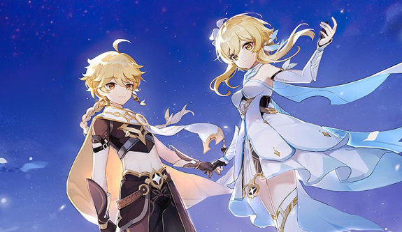
-
- “일곱가지 원소가 살아 숨 쉬는 판타지 세계 티바트”
- 한 여행자가 헤어진 가족을 찾기 위한 모험을 떠난다.
여러 나라를 여행하며 만나는 숨겨진 세계의 비밀과 새로운 친구들과의 이야기. - You have arrived in Teyvat — a fantasy world where the seven elements flow and converge. In the distant past, the Archons granted mortals unique elemental abilities. With the help of such powers, people formed a bountiful homeland out of the wilderness. However, 500 years ago, the collapse of an ancient civilization turned the universe upside down... Though the calamity the world suffered has ceased, peace has yet to be restored.
- 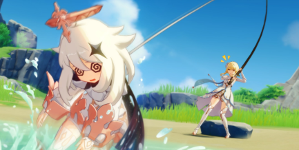
-
- “최고의 파트너!” 페이몬
- 어느 강에 빠져 익사하기 직전에 낚시 중인 여행자의 낚싯대에 우연히 낚인 생명체. 그 이후로 두 달 정도 아는 사이로 지내던 도중, 여행자의 과거 이야기를 듣고 실종된 가족을 찾기 위해 가이드를 자처하며 같이 모험을 나선다.
- Paimon is the deuteragonist of Genshin Impact. (Genshin Impact as its mascot)She is an open-world NPC who accompanies the Traveler throughout their adventure in Teyvat as their guide. She met the Traveler when the latter fished her out of the sea, after which she mentions she would have drowned if not saved by the Traveler.
About
- 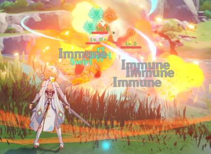
-
- 당신이 발견하는 새로운 세계
- 날개를 펼쳐 하늘을 활강하거나,
깊은 물 속을 헤엄치거나, 높은 산을 오르거나.. - 아름다운 맵을 탐험하세요. 자유로운 오픈월드가 당신을 기다리고 있습니다.
- 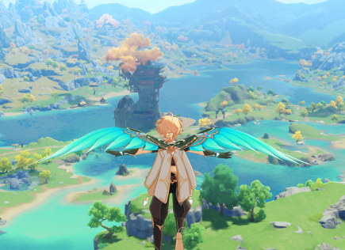
-
- 일곱 가지 원소를 이용한 전투
- 티바트 세계엔 바람, 바위, 번개, 풀, 물, 불,
얼음원소가 존재합니다. - 다양한 원소 반응으로 전략을 세우고,
강력한 적을 물리치세요.
- 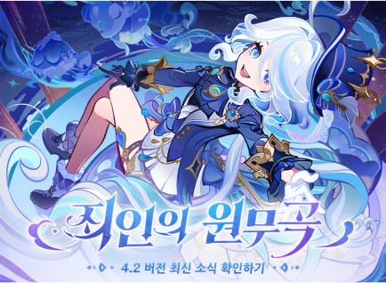
-
- 지속적인 업데이트
- 매달 업데이트 되는새로운 맵,
캐릭터,
컨텐츠를 즐겨보세요. - 오프라인에서 진행되는
다채로운 이벤트도
놓치지 마세요!
Character
-
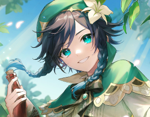
벤티 정체불명의 음유시인
-
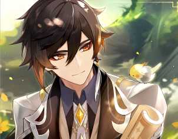
종려 리월의 신비로운 객경
-
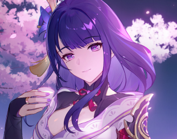
라이덴쇼군 이나즈마 막부의 최고 지배자
-
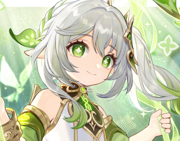
나히다 작은 쿠사나리 화신
-
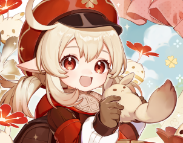
클레 기사단의 불꽃 기사
-
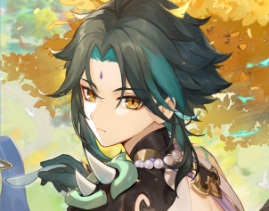
소 리월을 수호하는 선인
-
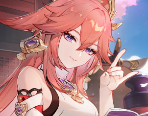
야에 미코 나루카미 다이샤의 궁사
-
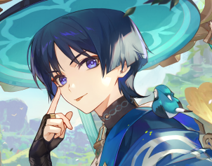
방랑자 바람처럼 떠도는 소년
Content
Gallery
- 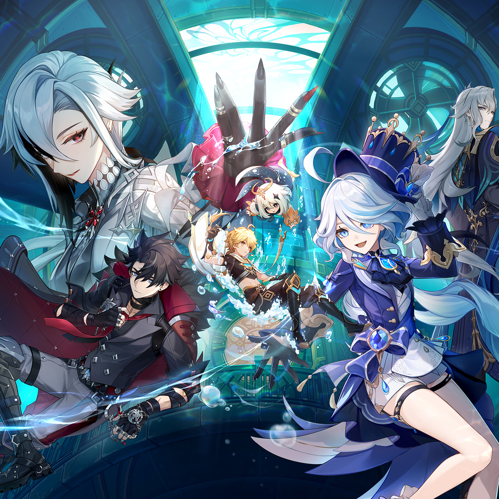
- 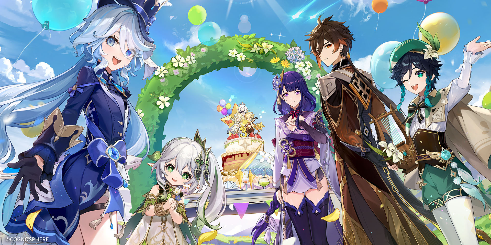
- 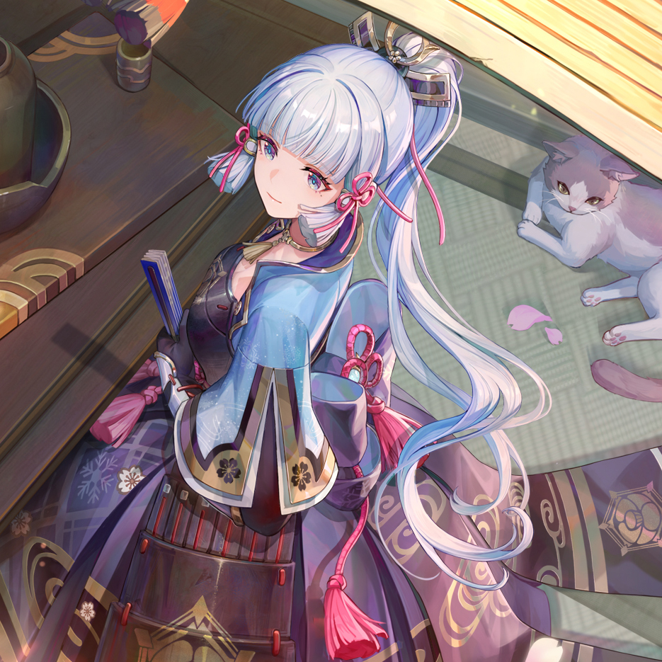
- 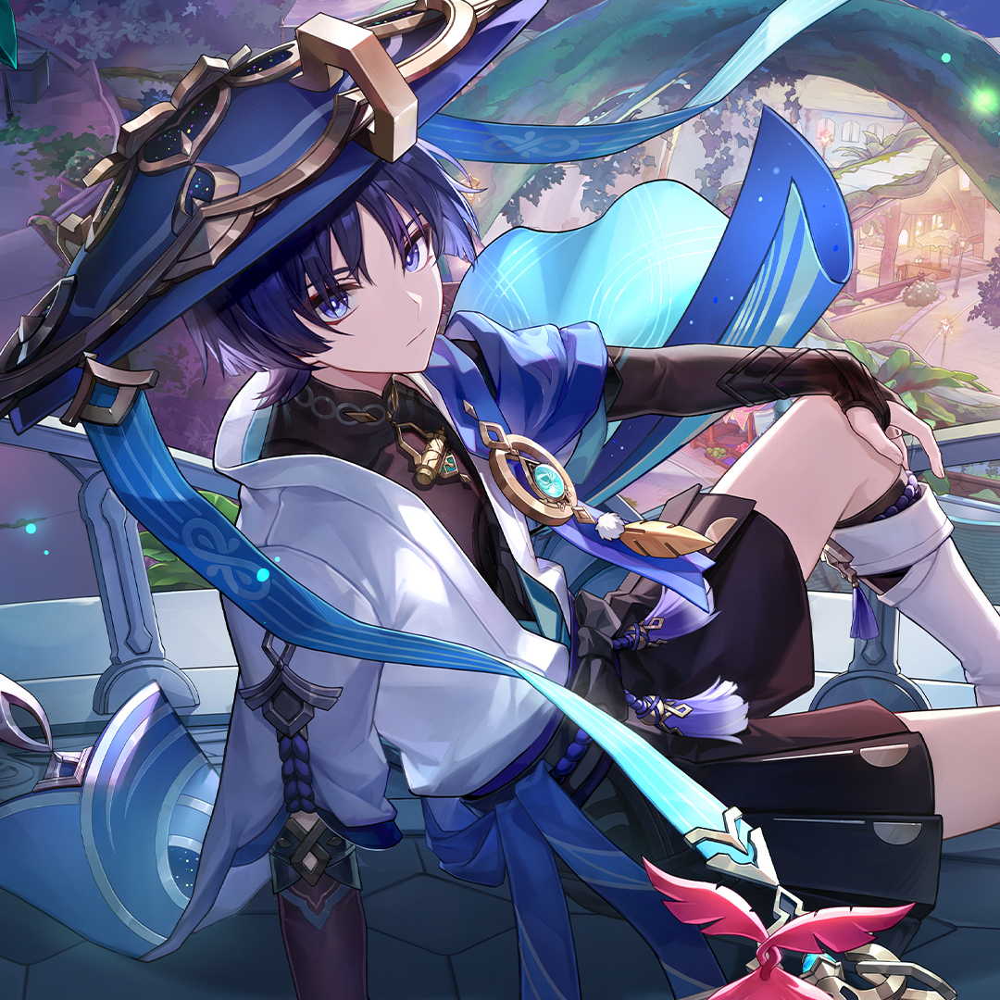
- 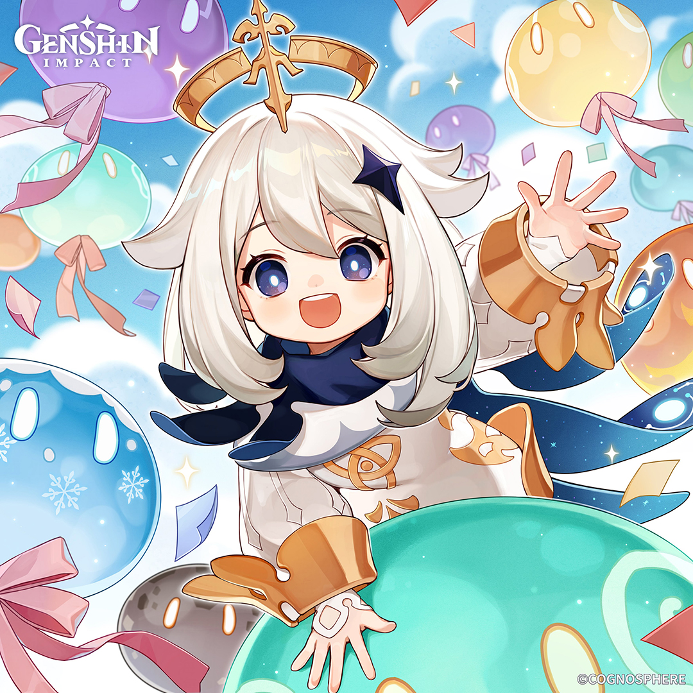
- 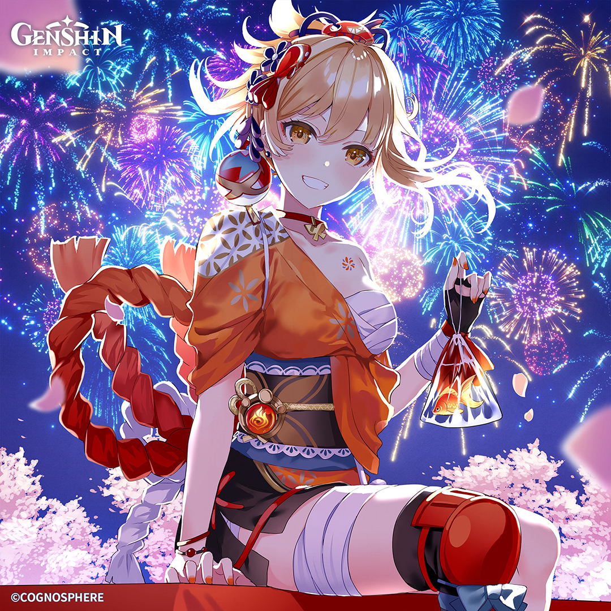
- 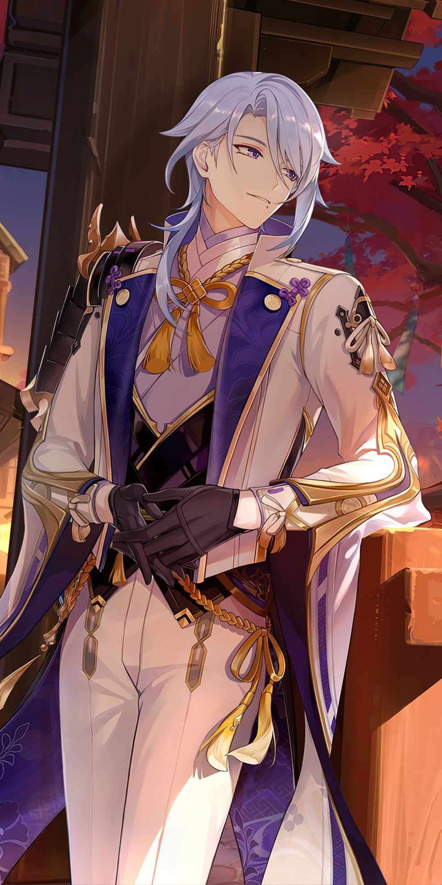
- 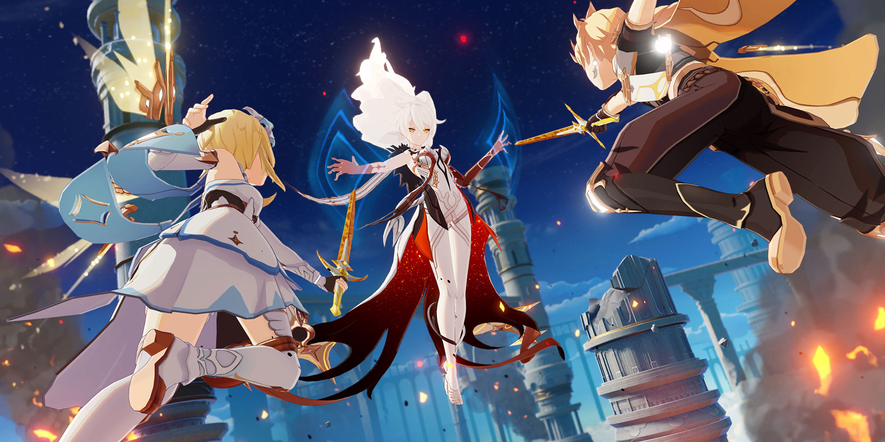
- 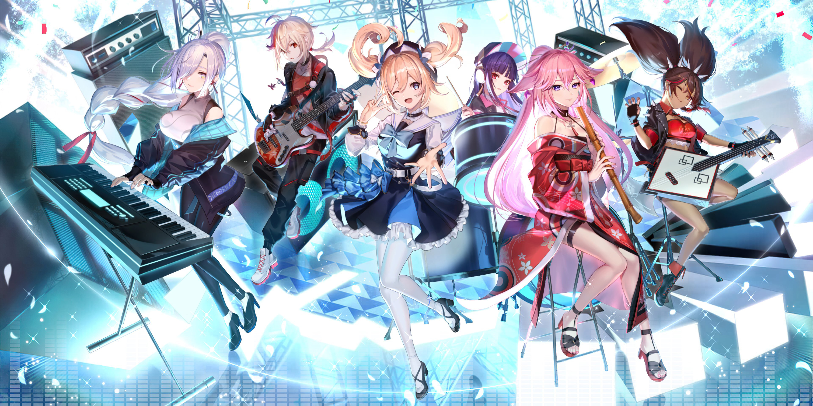